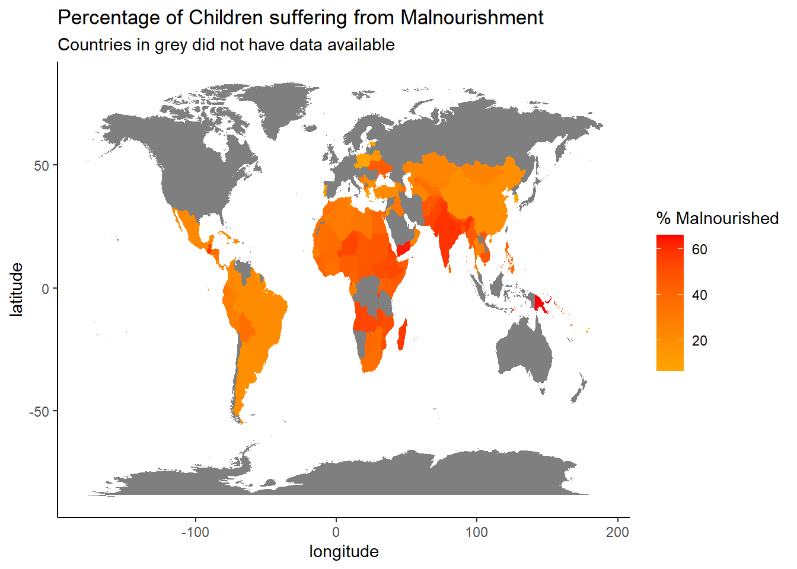
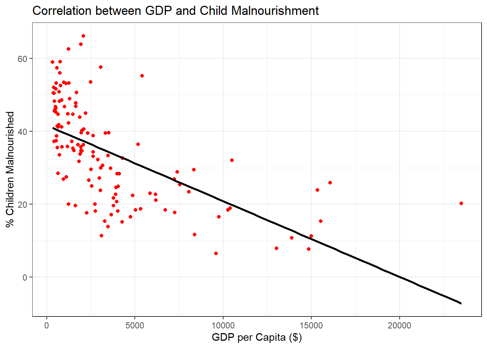
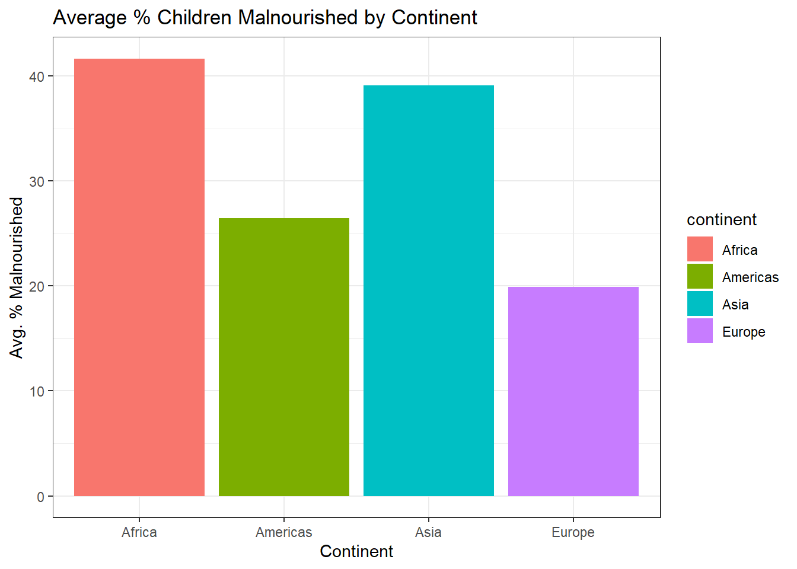

Child Malnutrition Across Nations:
Exploring the Interplay of Economic Development and Lifespan
Introduction
We live in the age of instant information, and yet despite this the majority of the population are not receiving information that is
- accurate
- important, or
- relevant.
For example, one issue that is not discussed enough is the state of child malnutrition across the globe. Child malnutrition includes;
- Wasting
- Stunting
- Overweight
By formatting data into visual arrangements, we can provide greater insight into this pressing issue, its link to a country’s economic performance, and the trends amongst each continent.
Child Malnutrition Across Borders
This map provides us with an indicator of just how serious this situation is. The use of colour illustrates the gravity of each country’s struggles with malnourishment, with many of the figures on display being alarmingly high.
Such damning figures display just how many nations have worrying levels of child malnutrition, to the point where many could consider it a crisis. As such it is vital that we highlight any potential factors affecting this emergency, in order to begin to solve this problem.
GDP and its’ Impact on Child Malnutrition

One vital factor in this matter may be a country’s economic performance. As the graph above shows there is a strong negative correlation between a country’s GDP per capita, and the percentage of its’ child population that are either wasting, stunted or overweight.
This shows us that the poorer a nation is, the more likely they are to have high rates of child malnutrition. While not the sole cause of the issue, there is clearly a strong link between the two matters.
The Wider Picture; Child Malnourishment by Region

If we take a step back, and group countries together by continent, there are worrying disparities on show. It is clear that
- Africa, and
- Asia
suffer far more from child malnourishment than
- Europe, or
- Americas
These vast inequalities may indicate deeper rooted matters across regions, and as such these regions likely require greater attention and aid in an aim to solve child malnutrition.
Shifting Horizons: Trends in Child Malnourishment Across Continents

This graph is limited by the range of information available to us, but it provides us with insights into the volatility of these matters.
Asia
- shows large swings in the average percentage of their child population suffering from child malnutrition.
- likely indicates that child nourishment may be largely dependent on market or farming conditions each year.
The Americas
- seem to be addressing this issue
- there is a downward trend in their levels of malnourishment.
Africa
- the most worrying trend
- has a consistently high percentage in this metric
- potentially indicating more systematic issues at the heart of this matter. These issues are ones that likely require the most addressing from global leaders.
Conclusion
Child malnutrition is an issue that should be hugely concerning to us all. The thought of the most vulnerable of our society suffering due to poor diet, and the impact that it is having on their livelihoods is extremely worrying. We can see how this matter is affected by a nations economic welfare, as well as how the issue is often widespread throughout a region. This analysis has to provide more incentive for our world leaders to provide more aid to struggling and underdeveloped nations - not for the countries themselves, but for their children.